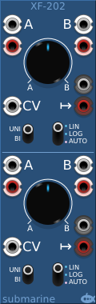
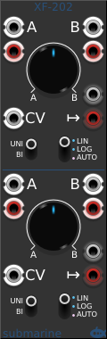
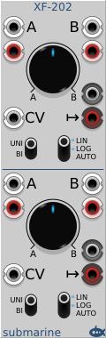
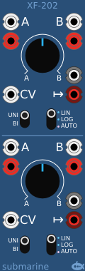
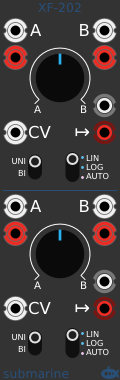
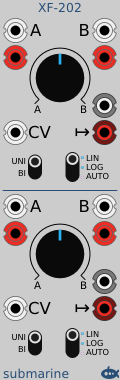

  
  
All Submarine Free modules have a Visual menu. This allows you to skin the module.
Three colour schemes are available, default blue, dark and light.
Also you can have the default 3d look, or a flatter look if you prefer.